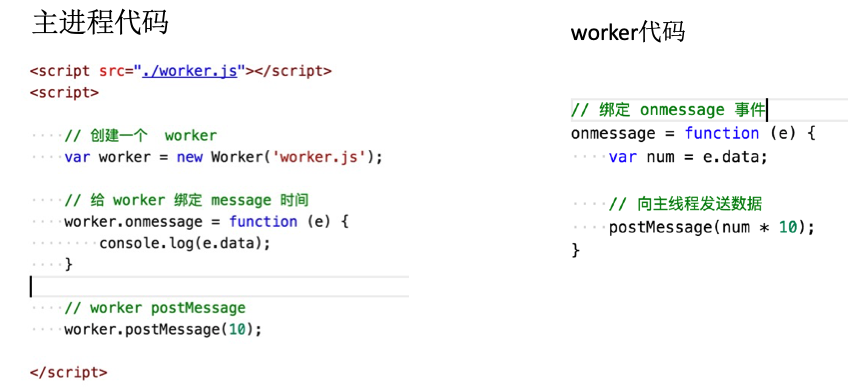

HTML5学习笔记 Canvas 画布 Canvas应用场景：
游戏
图表
动画
condepen.io（HTML5动效）
Canvas 发展史
最早在apple Safari1.3中引入，ie9之前的浏览器不支持canvas
如何使用canvas 添加canvas标签 1 2 3 4 5 6 7 <canvas width = 500 height = 500></canvas> 获取cancas元素 var canvas = document.getElementById('myCanvas') 获取canvas上下文对象 var ctx = camvas.getContext('2d');
如何画线段 1 2 3 4 5 6 ctx.moveTo(x,y) 移动到x,y坐标点 ctx.lineTo(x,y) 从当前点描绘直线到x,y点 ctx.stroke();描边 ctx.lineWidth = 20 设置线条宽度 ctx.closePath(); 闭合当前路径 ctx.fill() 填充
fill和stroke方法都是作用在当前的所有子路径
完成一条路径后重新开始另一条路径时必须使用beginPath()开始子路径的一个新集合
如何使用Canvas画矩阵 1 2 3 ctx.rect(x, y,dx,dy) ctx.fillRect(x,y ,dx,dy) ctx.strockeRect(x, y ,w, h)
如何擦除当前区域： ctx.clearRect
如何画圆角： 1 2 3 4 5 6 7 8 ctx.arcTo(x1,y1,x2,y2,r) //绘制的弧线与当前点和x1,y1连线，x1,y1和x2,y2连线都相切 贝塞尔曲线： quadraticCureveTo(x1 ,x2,ex,ey) 二次贝塞尔曲线 x1,y1控制点，ex,ey结束点 bezierCureveTo(x1,y1,x2,y2,ex,ey) 三次贝塞尔曲线 x1 y1 x2 y2 控制点 ex ey结束点
坐标轴的抓换 1 2 3 4 5 6 7 8 tanslate(dx,dy) 重新映射到画板上的（0,0）位置 scale(sx,sy) 缩放当前绘图 rotate(Math.PI) 旋转当前的绘图 save() restore() 保存当前图像状态的一份拷贝 从栈中弹出存储的图形状态并恢复 setTransform(a,b,c,d,e,f) transform(a,b,c,d,e,f) //在之前的基础上变换
渐变 createLinearGradubt(x1,y1,x2,y2);线性渐变，必须在填充渐变区域里定义渐变，否则没有效果
createRadialGradient(x1, y1, r1, x2, y2, r2); 径向渐变
阴影： 1 2 3 4 ctx.shadowColor ctx.shadowOffsetX ctx.shadowOffsetY ctx.shadowBlur
文本：
fillText();
strokeText();
measureText(‘helloworld’）
线段样式
lineCap
lineJoion
绘制图片： 1 2 ctx.drawImage(); //第一个参数是img(Image,canvas,video)
将canvas内容导出
canvas.toDataURL(); 是canvas自身方法不是上下文对象
将canvas的内容抽取成一张照片，base64编码格式（注意同源策略）
将canvas内容放进img元素里
获取canvas像素信息 1 2 3 ctx.getImageData(x,y,dx,dy) crx.createImageData(w,h) 创建新的空白ImageData对象 ctx.putImageData(imgData,x,y) 将图像数据放回画布上
SVG（Scalable Vector Graphics） 可缩放适量图形
SVG应用场景:
图表
图标icon
动效
矢量图
使用svg画各种各样的图形： 1 2 3 4 5 6 7 8 9 10 11 12 13 14 15 16 1. 直线 <line x1="100" y1="100" x2="200" y2=”100”></line> 2. 矩形 <rect x="50" y="50" width="100" height="100" rx="10"ry="20"></rect> 3. 圆形 <circle r="50" cx="220" cy="100"></circle> 4. 椭圆 <ellipse rx="100" ry="50" cx="100" cy="200"></ellipse> 5. 折线 <polyline points="60 50, 75 35, 100 50, 125 35, 150 50, 175 35, 190 50"></polyline> 6. 多边形 <polygon points="125 125,130 140,120 140"></ polygon> 7. ⽂本 <text x="125" y="220">hello,world</text>
path指令：（大写代表绝对定位，小写表示相对定位） 1 2 3 4 5 6 7 8 9 10 M = moveto L = lineto H = horizontal lineto 水平线 V = vertical lineto 垂直线 C = curveto 曲线 S = smooth curveto 平滑的曲线 Q = quadratic Belzier curve 二次贝塞尔曲线 T = smooth quadratic Belzier curveto 光滑贝塞尔曲线 A = elliptical Arc 椭圆弧 Z = closepath
SVG渐变
线性渐变
径向渐变
HTML5动画api requestAnimationFrame
页面刷新钱执行一次
1000ms 60fps -> 16ms
cancelAnimationFrame
用法和setTimeout类似
兼容性(只在IE10以上的浏览器)用老浏览器就用setTimeout
1 2 3 4 5 6 7 8 9 10 11 12 13 14 15 16 17 18 window.requestAnimFrame = (function(){ return window.requestAnimationFrame || window.webkitRequestAnimationFrame || window.mozRequestAnimationFrame || function( callback ){ window.setTimeout(callback, 1000 / 60); }; })(); //cancelAnimFrame() window.cancelAnimFrame = (function(){ return window.cancelAnimationFrame || window.webkitCancelAnimationFrame || window.mozCancelAnimationFrame || function( id){ window.clearTimeout(id); }; })();
客户端存储
Storage
localstorage (永久的)
sessionstorage(关闭浏览器就没有了)
cookie（存储容量很小，4K左右）
如何使用storage存储和读取数据 1 2 3 4 5 localStorage.name = 'admin' //存字符串 localStorage.info = JSON.stringify({name:'admin'，company:'jizhu'}) //存对象 var info = JSON.parse(localStorage.obj);//取出数据 console.log(info);
storage作用域
localSotrage -> 文档源限制
sessionStorage -> 文档源显示 + 窗口
storage 的API
setItem(name,val) 设置属性值
getItem(name) 获得属性值
removeItem(name) 移除属性
clear() 清除属性
cookie
存储信息到用户的设备上，数据量比较小
navigator.cookieEnable 监测是否开启了cookie
设置cookie值 1 2 3 4 5 6 7 8 9 10 11 12 13 14 15 16 document.cookie = “name=aimee” //（每次只能设置一个值，因为浏览器会认为后面的键值对是这个cookie的属性） document.cookie = “name=aimee” //（每次只能设置一个值，因为浏览器会认为后面的键值对是这个cookie的属性） function getCookie(name) { var name = name + "="; var ca = document.cookie.split(';'); for(var i=0; i<ca.length; i++) { var c = ca[i]; while (c.charAt(0)==' ') c = c.substring(1); if (c.indexOf(name) != -1) return c.substring(name.length, c.length); } return ""; }
cookie 与 storage的对比
history
history.back();
history.forward();
history.go(n)
通过修改hash和hashchange事件来实现历史纪录管理 1 2 3 4 5 //1、pushState history.pushState(state, title, url); //添加一条历史记录 //2、replaceState history.replaceState(state, title, url);// 替换当前的历史记录
worker(异步操作的api) 1 2 var worker = new Worker('workder.js') //https://www.w3school.com.cn/html5/html_5_webworkers.asp

geolocation
getCurrentPosition() //获取当前的位置信息
getCurrentPosition(s,e,p)
success 回调 必须的
error 回调
option 参数
watchPosition() //监视位置变化, 和1参数一样
clearWatch() //清除位置监视
1 window.navigator.geolocation.getCurrentPosition(suc)
PositionError对象
用户拒绝code = 1;
获取不到 code = 2;
连接超时 code = 3;
配置参数 enableHighAccuracy 是否需要高精度位置默认falsehttps://dev.w3.org/geo/api/spec-source.html#position_options_interface
watchPosition 1 2 var id = geolocation.watchPostion() //用于注册监听器，在设备的地理位置发生个改变的时候自动被调用 clearWatch(id) //使用clearWatch 清除监听
devicemotion事件所包含的属性
accelerationIncludingGravity （包括重心引力）重力加速度
acceleration 重力加速度
rotationRate(alpha, beta, gamma)旋转速率
interval // 获取的时间间隔
多媒体：
audio 音频
video 视频1 2 3 4 5 6 7 8 <audio src= "./demo.mp3" controls = ></audio> autoplay //自动播放控件 controls //设置控件 preload(none/metadata/auto)预加载 metadata :元数据 诸如时长、比特率、帧大小这样的原数据而不是媒体内容需要加载的 loop： 是否循环播放音频or视频 poster:(video独有)，当视频不可用的时候，使用一张图片替代
多类型选择器： 1 2 3 4 <audio id="music"> <source src="成都.mp3" type="audio/mpeg"> //如果没有第一个，就播放第二个 <source src="成都.ogg" type='audio/ogg"'> </audio>
脚本化： 1 2 3 4 5 var audio = document.getElementById('audio'); var audio = new Audio('./laojie.mp3'); var audio = document.createElement('video');
播放的方法
play() 方法
pause() 方法 //用于暂停
load()方法 用于重新加载视频/音频元素
表示播放音量，介于0(静音)~1(最大音量)之间，默认1。将muted属性设置为true则会进入静音模式，设置为false则会恢复之前指定的音量继续播放。超过范围会报错[0, 1]
播放速率playbackRate：用于指定媒体播放的速度。该属性值为1.0表示正常播放，大于1则表示快进，0-1之间表示慢放，负值表示回放。
currentTime/duration 属性
currentTime设置或返回音频视频的当前位置
duration 返回当前音频/视频的时常1 2 3 4 5 6 7 8 9 10 audio.currentTime = 50; button.addEventLidtener('clkick',function(){ consoloe.log(audio.currentTime) } ) window.onload = function({ console.log(audio.duration); })
played/buffered/seekable
played属性返回已经播放(看过)的时间段，buffered属性返回当前已经缓冲的时间段，seekable属性则返回用户可以跳转的时间段。这三个属性都是TimeRanges对象，每个对象都有一个length属性以及start()和end()方法，length属性表示当前的一个时间段，start()与end()分别返回当前时间段的起始时间点和结束时间点(单位是秒，起始参数是0)
paused/seeking/ended
canPlayType()方法 1 2 3 4 5 var a = new Audio(); if(a.canPlayType("audio/mp3")){ a.src = "./chengdu.mp3"; a.play(); }
事件
play 开始播放触发
pause 暂停触发
loadedmetadata 浏览器获取完媒体的元数据触发
loadedata 浏览器已经加载完当前帧数据，准备播放时触发，注意兼容IE8
ended 当前播放结束后触发
readyState属性音频的当前就绪状态
drap ＆ drop(常用语各种拖动操作中) 创建可拖动元素 1 <div id="abc" draggable="true"></div>//使用draggable之后就能够拖拽元素了
关于拖拽的相关事件：
dragstart 被拖拽元素 开始被拖拽时触发 e.dataTransfer.setData(“data”,e.target.id)
dragend 被拖拽元素 拖拽完成时
dragenter 目标元素 拖曳元素进入目标元素
dragover 目标元素 拖拽元素在目标元素上移动
drop 目标元素 被拖拽的元素在目标元素上同时鼠标放开触发的事件
e.dataTransfer.getData(“data”)1 2 3 4 5 6 7 8 9 10 11 12 13 14 15 16 17 18 19 20 21 <script> var item = document.getElementById("abc"); item.addEventListener('dragstart',function(){ console.log("akshd") }) var itemO = document.getElementById("wrapper"); itemO.addEventListener('dragenter',function(){ console.log('dragenter') }) //这个是写在被进入的元素里面 </script> DragEvent 事件对象 //传值 e.dataTranSfer.setData("data",e.target.id) //取值 e.dataTransfer.getData("data")
FileReader 读取文件
abrot() 终止读取
readAsBinaryString(file) 将文件读取为二进制编码
readAsDataURL(file) 将文件读取为DataURL编码
readAsText(file,[encoding]) 将文件读取为文本
readAsArrayBuffer(file) 将文本读取为arraybuffer 通过不同的方式读取文件
FileReader 事件
onloadstart 读取开始时触发
onprogress 读取中
onloadend 读取完成，无论成功或失败
onload 文件读取成功完成时触发
onabort 中断时触发
onerror 出错时触发1 2 3 4 获取读取的结果 fr.onload = function(){ tihs.result; }
Web Socket（是一个新的协议）
WebSocket 对象提供了一组 API，用于创建和管理 WebSocket 连接,
产生背景：
在 HTTP/1.0 中,大多实现为每个请求/响应交换使用新的连接
在 HTTP/1.1 中,一个连接可用于一次或多次请求/响应交换
HTTP协议中，服务端不能主动联系客户端，只能有客户端发起。
webSoket服务器和客户端均可主动发送数据
建立连接的握手：
当Web应用程序调用new WebSocket(url)接口时，Browser就开始了与地址为url的WebServer建立握手连接的过程。
Browser与WebSocket服务器通过TCP握手建立连接，如果这个建立连接失败，那么后面的过程就不会执行，Web应用程序将收到错误消息通知。
在TCP建立连接成功后，Browser通过http协议传送WebSocket支持的版本号，协议的字版本号，原始地址，主机地址等等一些列字段给服务器端。
WebSocket服务器收到Browser发送来的请求后，如果数据包数据和格式正确，客户端和服务器端的协议版本号匹配等等，就接受本次握手连接，并给出相应的数据回复，同样回复的数据包也是采用http协议传输。
Browser收到服务器回复的数据包后，如果数据包内容、格式都没有问题的话，就表示本次连接成功，触发onopen消息，此时Web开发者就可以在此时通过send接口向服务器发送数据。否则，握手连接失败，Web应用程序会收到onerror消息，并且能知道连接失败的原因。
1 2 创建webSocket var Socket = new WebSocket(url)
webSocket方法 1 2 Socket.send() 方法使用连接传输数据 socket.close() 方法用于终止任何现有连接
webSocket的优点
客户端与服务器都可以主动传递数据给对方
不用频率创建TCP请求及销毁请求，减少网络带宽资源的占用，同时也节省服务器资源